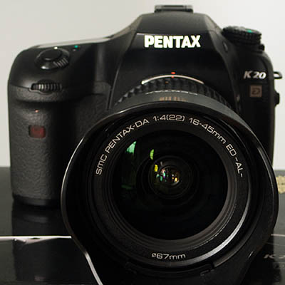
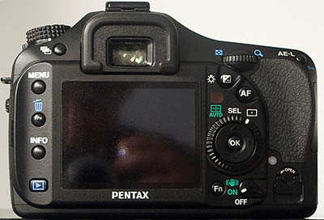
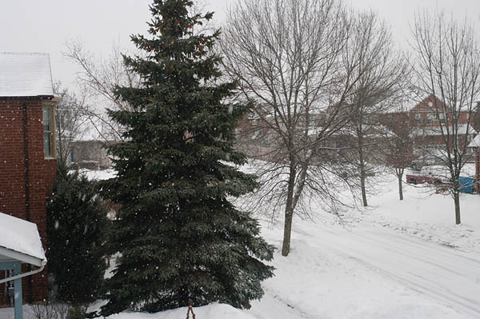

The Pentax K20D: a RAW review
Page 1, version 2.2, © 2008 by Dale Cotton, all rights reserved
Intro Handling Res Colour DR & noise High ISOs JPEGs Human subj. SR K10D comp. Eval
Concept: This review covers aspects of the Pentax K20D from the perspective of a landscape and a street photographer, shooting predominantly RAW files. I am not competent in and do not cover other domains, such as sports/action, photojournalism, studio, and flash.
This is also an interactive review: rather than leave you to try to sort out my biases from the facts, I provide full-size image files so you can form your own conclusions.
Procedural note 1: Feel free to contact me if I'm not addressing concerns you have or if you feel my methodology or analysis is in error.
Procedural note 2: Key images throughout this review have links both for a full-size JPEG version and the original RAW version for your evaluation. The JPEGs were processed from the RAW file in Lightroom using minimal settings, including linear curve, no NR, and no USM, then converted to JPEG in Photoshop at the highest level yielding a file size under 5 megabytes (usually level 10 or 11). The RAW files are mostly supplied as compressed DNGs, and range from 9 to 15 megabytes.
About printing: An obvious reason to buy a large megapixel camera is to make high quality prints. Some of the illustrations in this review have links to full-size, low-compression JPEGs, and some of these are print-ready. You can print these at the print size you normally use by changing PPI (pixels per inch). If you are contemplating buying a larger printer or having large prints made for you, you can also print just a portion of the whole image at the PPI setting you would use for a larger print.
The K20D is a semi-pro dSLR with a 14.6 megapixel APS-C format sensor. Here are the rest of the K20D's specs

Fig. 1: K20D front view

Fig. 2: K20D back view
The camera arrived on an early March Friday ... but so did a huge blizzard here in southern Ontario. This was somewhat frustrating given it's hard to take a sweeping landscape shot to evaluate a camera's fine detail rendition when falling snow is filling the air. So I contented myself with this shot through my bedroom window and moved on:

Fig. 3: Storm a-brewing (800 ISO, handheld + IS) (Full size 3.9 mb JPEG.)
In heft and size the K20D is right in the mainstream of 35mm SLRs going right back to the Nikon F – about 2 pounds and a hand's-length across. This is just right for me: enough heft to balance a fairly serious lens but not so much that I can't tote it for hours without noticing it's there. Also just right is the firmness of the various knobs and buttons; no chance of the mode dial or on/off dial rotating in the camera bag, for example. The finder is the same excellent pentaprism view Pentax has distinguished itself with since the first *ist D. The shutter release sound is meaty and about average in volume (meaning: not something you'd want to hear while a minister is saying "do you take this man to be your...").
The first task when getting a new digital camera is to plug the battery in the charger then plow through the manual. In this case over 150 action-packed pages of almost-reasonable English. (Actually, the main language problem is not that the manual was written by a non-native speaker; but that it was written in non-technical language. Kind of hard to talk about dynamic range or exposure latitude when you can't actually use either of those terms.) The manual is so long because the camera has so many features. What a camera is today is actually a full-scale software application, like the browser you're reading this in, running on a dedicated computer with some specialized and integrated peripheral devices like a sensor and a lens. Thus, using a modern camera has become as much a software learning-curve challenge as a hardware challenge. Now, you might think that you could just set the camera in manual exposure plus manual focus and away you go – but, no: you have to learn how to change the ISO, change the default 1 sec. display time for the image you just exposed on the monitor to something actually usable, etc., etc. One upside to this is the impressive range of customization options in the menu system.
One of the few perqs of doing a camera review is getting to grump and grouse about all the details that chafe one's sense of how things ought to be. I'm coming from the Pentax DS, having skipped the K10D, so much of what I say about the physical aspects of the K20D likely applies to the K10D as well.
(Naggy little) things that should not have been changed but were
- The battery door and memory card door have fussy little flip-up tabs that have to be rotated. The memory card door tab is something I use frequently and never without fear of snapping it off. Besides which, it rotates the wrong way and is hard to work with in difficult conditions.
Things that should have been changed but weren't
- Exposure compensation has a -3/+3 range in 1/2 stops but only a -2/+2 range in 1/3 stops. Pentax needs to follow Nikon's lead by providing -5/+5. If the Pentax engineering team wants proof that their pattern metering algorithm can be off by more than two stops (or any other brand's, for that matter), I'll be glad to provide it.
- This one deserves a new acronym, so unless someone can come up with a better term, I'll call it Highlight Protection Metering or HPM (related to but not quite the same as expose-to-the-right). Because the latitude of digital cameras is finite, every photographer past kindergarten has one over-riding concern: to let as much light as possible hit the sensor just short of blowing non-specular highlights. This is why we have blinking blown-highlight display and in-camera histograms. Why not just provide a dedicated HPM mode and be done with it? As my father would say: Sheesh!
Things that should have been changed and were
- ISO. Three things effect exposure in equal measure: aperture, shutter, and ISO. All three need to be visible in the finder and all three need to be easily modified. Why has this been such a difficult concept for camera designers to grasp? Finally, Pentax, at least, gets it (nearly) right. With a custom function that eluded me at first, one can opt to display ISO instead of frame count in both the finder and the upper LCD (frame count shows for a second after each exposure and can be checked at any time by pressing the OK button). As another nice touch, another custom function allows you to set either thumb wheel to change ISO in Tv and Av. Since I live in Av, this means I change the aperture with one wheel as usual, but with the other I change the ISO or set the exposure comp. depending on whether I'm holding down the exp. comp. button or no.
- User setting on the mode dial. I really longed for this when I had the Pentax DS. In situations in which I was working with moving subjects, I wanted to use Av and pattern metering. Working with relatively static subjects like landscape, I used Manual or Av and spot metering. So now Pentax gives me the ability to store settings and switch to them by thumbing the mode dial. Problem is that some key settings aren't covered, such as shake reduction and AF mode. Presumably, that's because they have dedicated buttons, and changing them via the User mode setting would create a mismatch between what the camera is doing and what the dedicated button is showing it to be doing.
- AE/AF-lock is now two separate buttons. That's a good thing for the way I work; but I'm finding that it's a hard habit to re-learn.
Things that were changed and/or added that sort-a leave me scratching my head
- Sv and TAv. (Yes: I know these were in the K10D, but I'm coming from the DS.) I expect to some day have a moment of epiphany as to why Sv sits there on the mode dial. I actually used TAv, however. Taking test shots out the window of the commuter train, I wanted the fastest possible shutter speed, and wanted the fastest aperture, as well, but didn't consider ISO to be critical.
An interesting addition that I'm not quite sure into which of the above categories it belongs is live view. Over time I assume I'll come to have an opinion on what to do with it, but so far no bells have rung. It's quite true that you can hold the camera at arm's length overhead and still see what's on the monitor, but I attend very few parades and rock concerts...
What's driving me crazy right now is finding the dinky AF, +/- (Exp. Comp.), and AE-L (Exp. Lock) buttons with my right thumb. Presumably my hand will get used to them in time.
How to take a picture with the K20D
Probably a topic of study for a lifetime, but here's what I've come up with so far, based on Av mode. I used the custom settings menu to assign EV comp and ISO to one scroll wheel and of course aperture to the other when the mode dial is set to Av. I also turned off AF on the shutter release button half-press, leaving it assigned to the AF button.
Rush shots: (no time to check exposure, etc.) I put the meter on pattern, the AF mode dial on centre, check the aperture if I have the luxury of that much time, press the AF button with the part of the scene I want to focus on centered in the the finder, compose, adjust ISO via scroll wheel if needed, then shoot.
More leisurely shots: I switch the meter to spot, switch the mode dial to User, which is Av with +3.0 EV/comp dialed in, meter off the brightest spot in the scene, check that my aperture is what I want for DOF push the exposure lock button (= ETTR or expose-to-right metering), then use ISO to get my shutter speed in the appropriate ball park. In theory I would compose next, then do focusing as above with the AF button but in addition select the appropriate focus point; in practice I am more likely to stick to the centre focus point.
It only sounds complicated...
That's it for the merely practical aspects of the camera. The rest of this review concerns what's near and dear to my heart: image quality, starting with resolution and acutance.
|
{kind=link}
{kind=link}
{kind=link}
{kind=link}